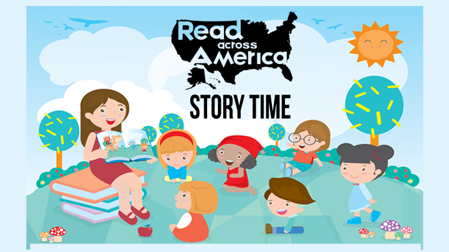
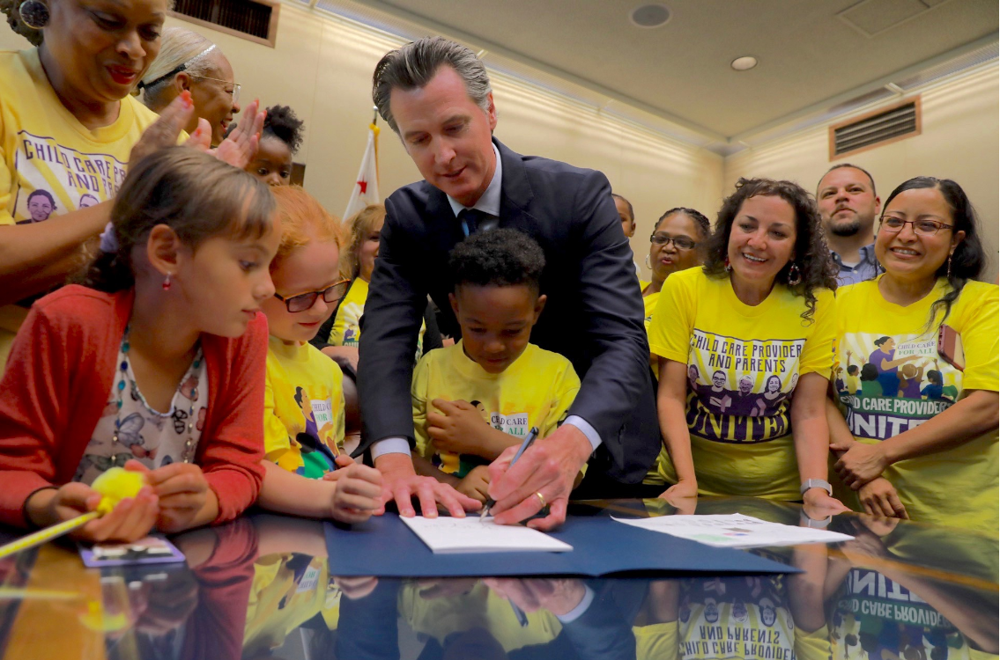
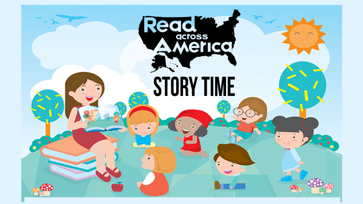
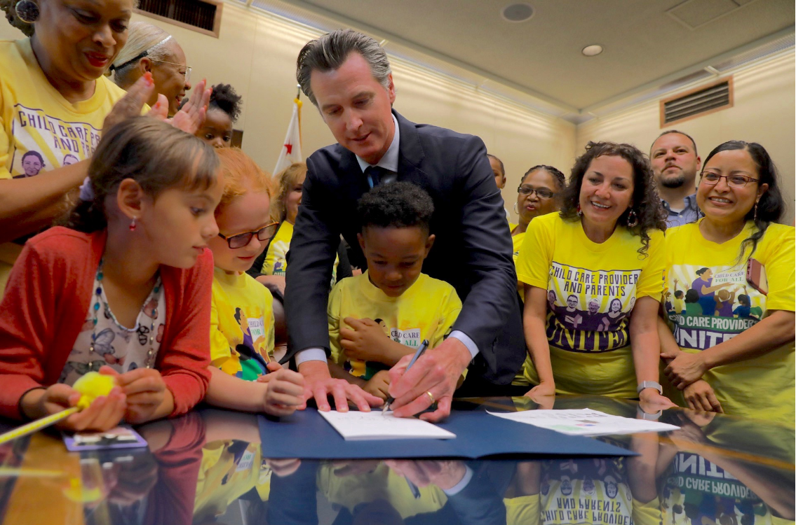

Fabian Perez
I am currently enrolled at the University of Riverside, I am a freshman majoring in Pre-business. I was raised in a Hispanic community, where almost all my surroundings were part of Hispanic culture. The school I attended was primarily Hispanic and growing up in this environment has molded me into who I am today. I hold my culture very close to heart because it brings family members together as well as friends who share the same struggles growing up. During the winter my family and my relatives always group up and feast, it’s one of our traditions to cook tamales, carne asada, pozole, and much more. Growing up there has always been family gatherings at a consistent rate which is part of what my culture means to me
Family gatherings are where my culture begins, we attend birthdays, quinceaneras, weddings; there we celebrate, dance, sing, cook, and feast. We always keep in touch and make powerful bonds, this culture empowers me to meet new people and make bonds. As a child, my culture brought people together which molded me to interact with people I’ve never met, to this day I find myself meeting people and making friendships natural.
It is evident that many states make it quite difficult for young voters to register. While some states established policies that make it easier, many have done the opposite and designed barriers for voting; according to Asiah Williams, she writes in the article “Of Course Republicans Want to Suppress the Youth Vote”. Asiah Williams states, “More than 21 million Americans lack government-issued photo identification, including 25 percent of African Americans, according to the American Civil Liberties Union ”.
Experience
Teaching Assistant
• Took multiple computre science courses
• Woreked as a liberian
• Worked with childern at a day care
• TA'd for over 400 students each academic quarter
Education
UC Riverside
University of California Riverside
University of California Riverside
Portfolio



 